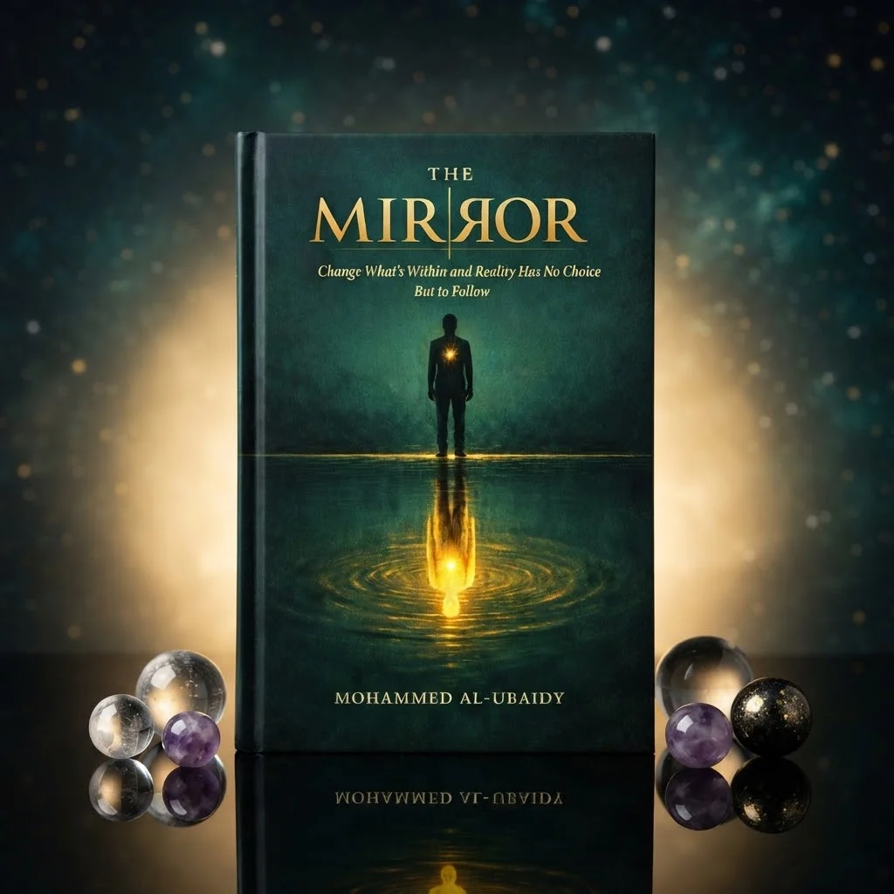

Best Academic Books in Karachi: Practical Shopping Guide

Looking for the best academic books to buy in Karachi? This practical shopping guide helps you navigate the selection of academic resources available online, focusing on content relevance, affordability, and delivery options. The provided listings include a mix of self-development, romance, and fiction titles, which may not all align with traditional academic expectations. While some books offer deep insights into personal growth and literature, others fall into the broader category of fiction or emotional storytelling. This guide highlights key factors to consider when choosing academic books, such as content quality, pricing, and delivery policies. Whether you're a student, educator, or lifelong learner, understanding these elements ensures you make informed decisions when purchasing academic materials in Karachi.
Quick buying check: Match the actual item to your task, check its measurements or compatibility, and compare the full delivered price. Read the listing and policies before you order. The examples below are catalog evidence, not hands-on test results.
Key benefits of choosing Academic Books carefully
- Better fit for your task: select the specification or design your situation needs.
- Clearer budget: compare the item, delivery and any required extras together.
- Fewer avoidable returns: resolve missing measurements and compatibility questions before ordering.
- More useful ownership: check how the item will be stored, cleaned and used.
Selection criteria and matching the actual task for Academic Books
Selection criteria for academic books in Karachi should prioritize relevance to your specific course or research area. Look for books that match your syllabus or academic goals, ensuring the content aligns with your learning needs. Check the author's credentials and the publisher's reputation to assess the book's reliability. Consider the edition's date to confirm it contains up-to-date information. This helps avoid outdated or irrelevant material that may hinder your studies.
Matching the actual task involves assessing the book's depth and suitability for your academic level. Determine if it's appropriate for undergraduate, postgraduate, or specialized research. Evaluate the clarity of explanations and the availability of examples or case studies. Some books may be more theoretical, while others offer practical applications. Choose based on your learning style and the nature of your coursework.
Evaluate the practical aspects of purchasing academic books in Karachi. Look for sellers with clear return policies and reliable delivery options. Check customer reviews for insights into the book's quality and the seller's service. Compare delivery costs and estimated arrival times to plan effectively. Ensure the seller provides accurate descriptions and clear information about the book's condition and edition.
Fit, dimensions, compatibility or edition checks for Academic Books
Fit, dimensions, compatibility or edition checks are essential when purchasing academic books in Karachi. Ensure the book size matches your storage space or study area to avoid inconvenience. Verify the edition number to confirm it aligns with your course syllabus or instructor’s recommendations. Check if the book includes necessary supplements like CDs, online access codes, or study guides. Confirm the language and regional edition to avoid confusion, especially if the book is imported.
Check the book’s content structure to ensure it suits your learning style, whether you prefer detailed explanations, diagrams, or practice problems. Confirm compatibility with any digital tools or platforms your institution uses, such as e-readers or learning management systems. Look for any specific formatting requirements, like hardcover or paperback, and ensure the book is available in the desired condition—new or used.
Review the publisher’s reputation and any user reviews to gauge the book’s reliability and quality. Check for any known issues with the edition, such as printing errors or missing sections. Ensure the book is suitable for your academic level, whether it's for undergraduate, postgraduate, or professional use. These steps help in making an informed decision and ensure the book provides long-term value for your educational journey. Always cross-check details with the seller to avoid discrepancies.
Quality evidence and limitations of listing claims for Academic Books
Quality evidence for listing claims about academic books in Karachi involves verifying the accuracy of information such as author names, publication dates, and subject relevance. Reliable sources include university libraries, academic databases, and verified online retailers. Cross-checking details ensures that the listings reflect real-world availability and content. This helps buyers avoid outdated or incorrect information that could lead to poor purchasing decisions.
Limitations of listing claims often stem from incomplete or outdated data. Some listings may not reflect current stock levels or pricing, especially in a dynamic market like Karachi. Additionally, descriptions might lack specifics about book conditions, editions, or delivery options. Buyers should look for clear return policies and customer reviews to mitigate these risks and make informed choices.
Practical advice includes checking multiple sources before purchasing and focusing on verified platforms. Pay attention to delivery times and return policies, as these can affect the overall value. Comparing listings across different sellers helps identify the best options. Always read product descriptions carefully to ensure they meet your specific academic needs. Look for listings that include clear images of the book and any accompanying materials.
Budget tradeoffs and the full delivered cost for Academic Books
Budget tradeoffs require careful evaluation of what features and benefits are most important. Prioritize books that align with your academic goals and ensure they offer long-term value. Consider the cost of shipping and any additional fees that may affect the total price. Always compare multiple sources to find the best balance between cost and quality. Look for platforms that offer transparent pricing and clear delivery information.
Full delivered cost includes more than just the book price. Factor in shipping, handling, and any taxes that apply. Some sellers may offer free shipping, which can significantly reduce the overall expense. Be mindful of delivery times and reliability, as delays can impact your study schedule. Always check the return policy and delivery guarantees. Some platforms may provide better customer support and faster resolution of issues.
Practical shopping involves checking for discounts, promotions, and customer reviews. Look for platforms that provide clear information on delivery options and return policies. Ensure the books meet your specific academic needs and are available in the desired format. Stay informed about any changes in pricing or availability to make smart, informed choices. Always verify the seller's reputation and read user feedback before purchasing. Consider the overall experience, including ease of navigation and customer service.
Setup, care, storage and useful ownership for Academic Books
Setup for academic books in Karachi involves verifying the correct edition, format, and content relevance before purchasing. Check for accurate publication dates and ensure the book aligns with your course syllabus or research needs. Confirm if the book includes supplementary materials like online resources or study guides. Review delivery options, including cash on delivery, and understand return policies. Proper setup ensures the book is suitable for your academic goals and avoids unnecessary delays or returns.
Care for academic books in Pakistan requires handling with clean hands and avoiding exposure to moisture or direct sunlight. Store books in a cool, dry place away from heat sources and humidity. Use bookends to prevent warping and keep them upright on shelves. Avoid folding pages or marking text unless necessary. Regularly inspect for damage or wear, and address issues promptly to maintain the book’s condition and readability over time.
Storage and ownership of academic books in Karachi should focus on organization and long-term accessibility. Keep books in a designated study area or shelf for easy access during study sessions. Use protective covers or cases for added durability, especially for frequently used texts. Consider digital backups for essential materials where available. Maintain a record of purchases and returns for reference.
Common mistakes, arrival inspection and returns for Academic Books
Common mistakes when buying academic books in Karachi include overlooking the edition or version, which can lead to receiving outdated content. Buyers often fail to verify the publisher's reputation or check for any binding issues. It's essential to cross-reference the book's ISBN with the seller's listing to ensure accuracy. Always read the seller's return policy before purchasing to avoid complications later.
Upon arrival, inspect the package for any signs of damage or tampering. Open the box carefully and check if the books are in good condition, with no torn pages or missing sections. Compare the delivered items with the order confirmation to ensure everything matches. If there are discrepancies or damages, document them immediately with photos and contact the seller for resolution.
Returns can be complex, especially with online purchases. Understand the seller's return window and conditions before buying. Some sellers may require the original packaging or a return authorization number. Keep all receipts and communication records. If the book does not meet expectations, follow the outlined return process promptly to avoid delays. In some cases, returns may involve shipping costs, so it's important to factor this into your decision.
Future changes and responsible shopping decisions for Academic Books
Future changes in academic book availability and delivery methods in Karachi will likely involve more digital options and faster logistics. Shoppers should stay informed about new platforms and services that may offer better access or lower costs. Keeping an eye on trends can help make more informed choices as the market evolves. Consider exploring online marketplaces that provide detailed product descriptions and customer reviews to assess quality and relevance.
Responsible shopping decisions involve considering the long-term value of academic books rather than just initial cost. Evaluating factors like durability, relevance, and availability of updates can lead to better purchases. Supporting local sellers and understanding return policies also contribute to more thoughtful buying habits. Check for discounts, bundle deals, and seasonal promotions that may offer better value. Always verify if the edition matches the required curriculum or course outline.
Making sustainable choices means looking beyond immediate needs and considering how books will be used and stored. Checking for reliable delivery options and understanding return procedures can prevent unnecessary waste. Staying aware of market changes helps ensure that each purchase aligns with both educational goals and responsible consumption. Consider the environmental impact of shipping and packaging when making decisions. Opt for sellers with eco-friendly practices where possible.
A useful buying decision connects your actual task to a clearly described item. A category name, attractive photo or low headline price cannot replace checking what will arrive and whether it fits.
Illustrative Pakistan use cases for Academic Books
Illustrative: compare a fixed PKR budget
A student in Karachi with a fixed budget should compare the total delivered cost of academic books by adding the listed price and delivery fee. For example, a book priced at 901 PKR with a 250 PKR delivery charge totals 1151 PKR. If the book is under 5000 PKR, the delivery fee applies. Checking the total cost helps ensure the purchase fits within financial limits and avoids unexpected expenses. Always confirm delivery charges before proceeding.
Illustrative: check fit for shared home use
A family sharing a study space may need academic books that suit different learning styles. A student studying engineering might prefer technical guides, while a younger sibling could benefit from study aids. Checking the book descriptions and summaries helps ensure the content matches the user's needs. For example, a book on self-development may not be suitable for a math student. Matching the book to the user’s goals ensures it is both useful and well-used.
Illustrative: plan delivery and arrival inspection
A customer ordering academic books to a smaller town should plan for longer delivery times and inspect the item upon arrival. Delivery to these areas can take 3-6 working days, so it’s important to be available for the courier. When the package arrives, check the book’s condition and ensure it matches the description. If there is a problem, the return policy allows for a 7-day window. This helps avoid issues and ensures the right product is received.
Comparison and evidence from actual catalog listings
The following listing snapshot was recorded at 2026-10-21 09:10:20 PKT. These are seller-provided descriptions, not independent performance tests. A category label does not confirm that an item suits every task discussed in this guide. Check the linked item for its current price, availability, measurements and included accessories.
| Listed item | Snapshot price | Listing evidence and limits |
|---|---|---|
| The Mirror: Change What's Within and Reality Has No Choice But to Follow – By Mohammed Al-Ubaidy | Rs 1,112 | Listing description: Bridge the gap between modern self-development and spiritual wisdom with The Mirror by Mohammed Al-Ubaidy. This thought-provoking book explores subconscious reprogramming, the mirror law of personal reality, and profound inner maps derived from Quranic insights to help you transform your life from the inside out Confirm any unspecified detail with the store. |
| Un N Me… It’s Complicated By Dr. Aditya R. Nighhot | Contemporary Romance Novel Emotional Storytelling | Rs 901 | Listing description: “Un N Me… It’s Complicated” is a heartfelt contemporary romance novel by Dr. Aditya R. Nighhot, the bestselling author of Until Love Sets Us Apart. This engaging story explores the complexities of love, relationships, and emotional bonds, weaving a narrative that resonates deeply with readers who enjoy romance filled with passion and realism.Perfect for fans Confirm any unspecified detail with the store. |
| Until Love Sets Us Apart is a popular contemporary romance and thriller novel written by Indian author Dr. Aditya Nighhot. | Rs 901 | Listing description: Overview of the Book;core Plot: The story follows Rohit and Aisha, two complete opposites—Rohit is easygoing and imperfect, while Aisha is a focused perfectionist. Despite their differences, they fall deeply in love, and a wedding is on the cards.The Twist: What begins as a sweet, college-centered romance and tale of deep friendship takes a dark, Confirm any unspecified detail with the store. |
Delivery and returns: Sasta Milaga currently lists Rs 250 delivery, free above Rs 5,000. Usual estimates are 2-4 working days in major cities and 3-6 elsewhere. Returns can be requested within 7 days; damaged or wrong items return free, while other returns cost Rs 250. Check delivery terms and return terms for current conditions.
Frequently asked questions about Academic Books in Pakistan
How do I choose Academic Books for my needs?
How do I choose Academic Books for my needs? Consider the purpose of the book—whether it's for study, research, or personal growth. Look for titles that align with your specific subject or interest. Check the author's credentials and reader reviews if available.
What should I check in the listing before ordering?
What should I check in the listing before ordering? Review the book's description for content details, author information, and publication year. Verify the listed price and any additional fees like delivery charges. Check the return policy and delivery timelines to understand what to expect.
How do I compare the full cost in Pakistan?
How do I compare the full cost in Pakistan? Add the listed price to any delivery fees and return charges to calculate the total cost. Compare these totals across different sellers to find the best value.
How much is Sasta Milaga delivery and how long does it take?
Sasta Milaga currently lists Rs 250 delivery, with free delivery on orders above Rs 5,000. Usual estimates are 2-4 working days in major cities and 3-6 working days elsewhere. Read the linked delivery page for current conditions and allow for your specific address.
Can I return a damaged, wrong or unsuitable item?
The published return window is 7 days after delivery. Damaged or wrong items return free, while other returns carry a Rs 250 fee. Read the linked return policy, keep the packaging and report the issue promptly.
Are the product examples independently tested recommendations?
No. The examples are a dated snapshot of seller-provided catalog listings. We have not independently tested these items or verified customer outcomes. Prices and availability can change. Open each product page, compare the stated specifications with your needs and ask the store about missing details.
Conclusion
The best academic books in Karachi offer a range of options for students and educators, but buyers must navigate the catalog carefully. The available listings include titles like *The Mirror* and romance novels, which may not align with traditional academic needs. Prices vary, with items starting at PKR 901, and delivery fees apply for orders under PKR 5000. Shoppers should review product descriptions thoroughly, as detailed information is limited. For a smoother experience, prioritize verified sellers, check delivery timelines, and plan purchases to meet free delivery thresholds. Always review return policies before buying, especially for academic materials that may require specific handling.
Choose with a clear checklist. Browse Academic Books and compare current listing details. Read how to order before placing a cash-on-delivery order. Take time to confirm the item fits your needs.
Tags: best academic books in Karachi, academic books online Pakistan, buy academic books online, academic books price in Pakistan, academic books comparison, academic books shopping checklist, academic books cash on delivery, how to choose academic books for everyday use, what to check before buying academic books online, compare academic books with delivery costs in Pakistan, academic books buying guide for Pakistani families, questions to ask before ordering academic books with COD
More guides
Air fresheners size fit compatibility Pakistan: Size, Fit and Compatibility Checklist
Compare Air Fresheners in Pakistan: listing details, fit and delivered costs. Read product, delivery and return information before ordering.
Umrah travel checklist: documents, packing and planning
A practical Umrah checklist: passport and visa documents, what to pack for Makkah and Madinah, health preparation and booking tips.
Air conditioners (split) size fit compatibility Pakistan: Size, Fit and Compatibility Checklist
Compare Air Conditioners (Split) in Pakistan: listing details, fit and delivered costs. Read product, delivery and return information before ordering.